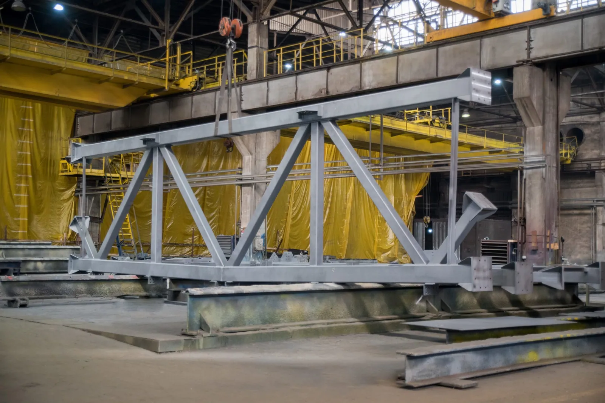
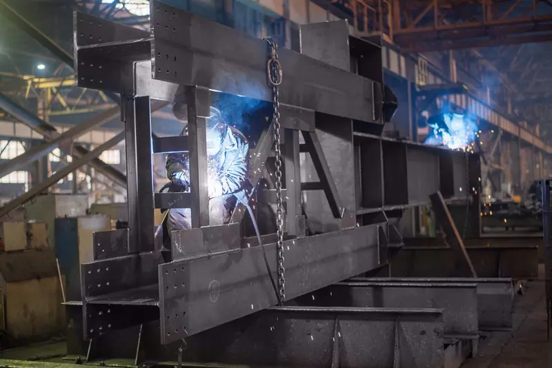
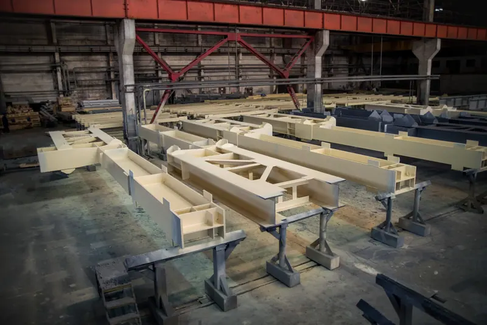
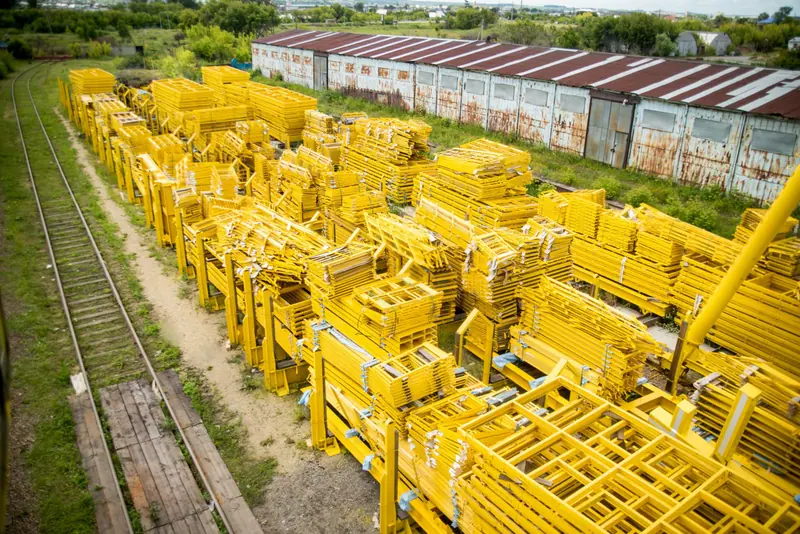
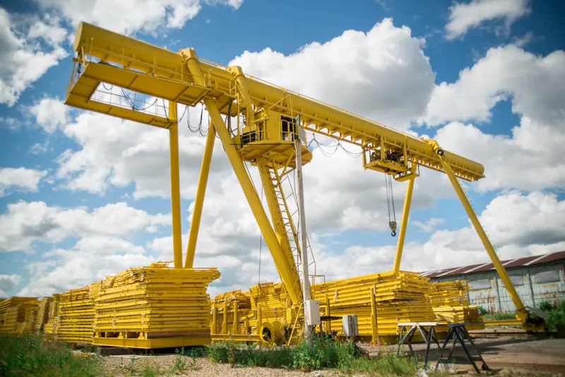
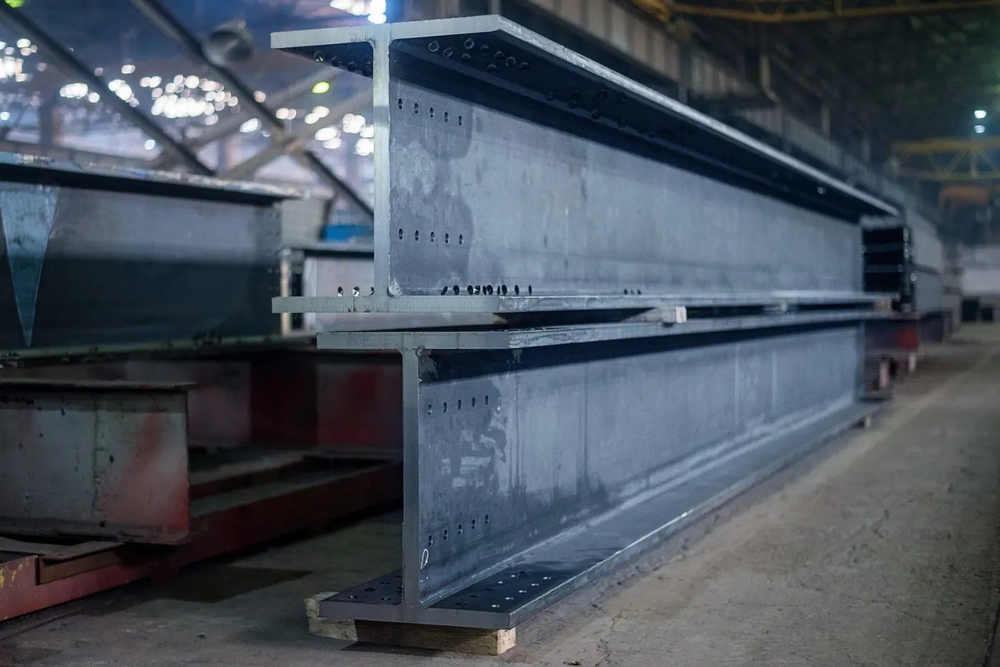
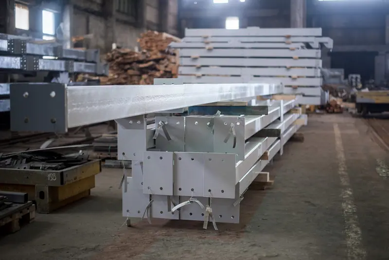
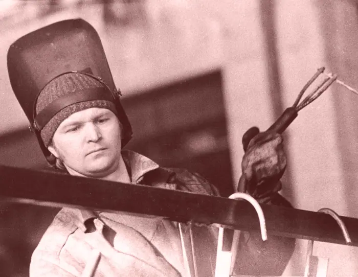
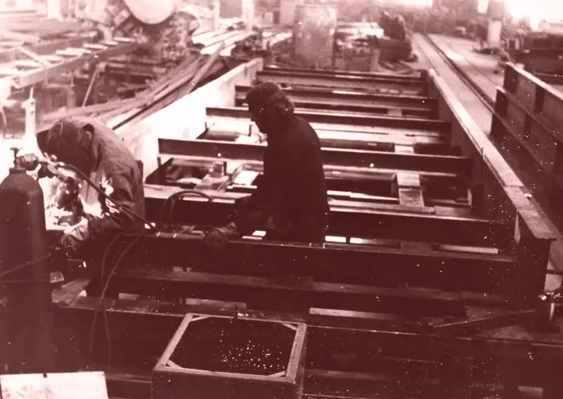
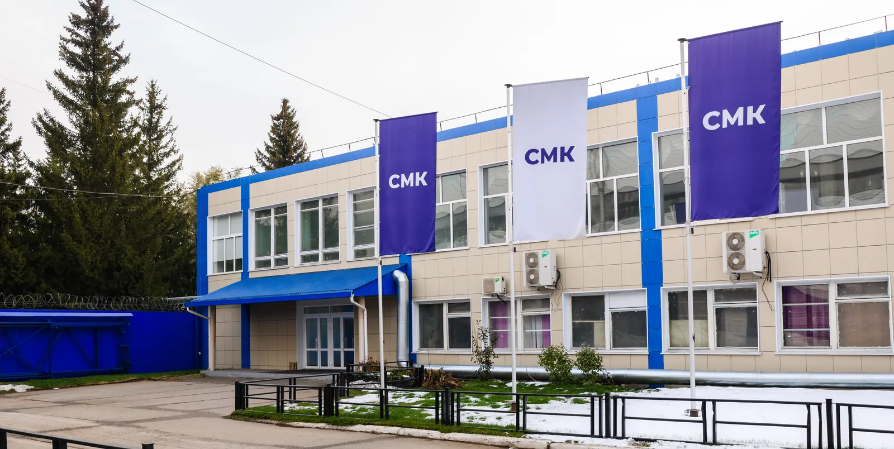

Стальные каркасы зданий от проката до отгрузки
АО «СМК Шадринск» — один из крупнейших в России производителей стальных каркасных металлоконструкций. Корпуса, эстакады, терминалы, офисные и культурные здания — полный цикл в одном корпусе завода.
- до 42 000 тметаллоконструкций в год
- 250 000+ тотгружено с 2011 года без единой рекламации
- ISO 9001:2015 · НАКСсертифицированная СМК, аттестованная сварка

Горнодобывающая, металлургическая, нефтегазоперерабатывающая, машиностроительная, химическая, энергетическая и инфраструктурная отрасли.
Что изготовим для вашего объекта
Выберите тип объекта — схема покажет, из каких конструкций его собирает завод. Параметры уйдут в запрос одним нажатием.
От листа металла к каркасу здания
- Этап 1 из 5
Заготовка
Склад принимает до 5 000 т проката с автотранспорта и ж/д вагонов. Весь прокат очищают от окалины в дробеметной установке до степени Sa2, лист правят на листоправильной машине и режут на машинах термической резки с ЧПУ.
- Этап 2 из 5
Сборка и сварка
Почертежная комплектация, сборка на сборо-сварочных столах. Сварка под слоем флюса, в среде защитных газов и ручная — технология и сварщики аттестованы НАКС. Швы проверяют ВИК, радиографией, ультразвуком.

- Этап 3 из 5
Окраска
Абразивоструйная камера до степени Sa2–Sa3, безвоздушное окрашивание, «тёплый пол» для сушки покрытия. Двух- и трёхслойные системы антикоррозионной защиты, огнезащита от R15 до R120.

- Этап 4 из 5
Отгрузка
Цех покраски и отгрузки работает круглосуточно: 4 линии погрузки позволяют одновременно загружать 5 автомобилей и 8 вагонов.

- Этап 5 из 5
Каркас на объекте
Чертежи КМД разрабатывают собственные конструкторские бюро, конструкции проходят контрольные сборки на стендах. Итог — 100 % собираемости конструкций на монтаже. По желанию заказчика — монтаж и шефмонтаж.

Один корпус — полный цикл
Главный производственный корпус площадью более 50 000 м² вмещает весь путь металлоконструкции: от хранения и подачи проката до хранения и отгрузки готовой продукции.
Склад металлопроката
Профильный и листовой прокат, участок делового возврата, до 5 000 т на хранении.
Цех обработки
Машины термической резки с ЧПУ, автоматические линии плазменной резки, сверления и фрезеровки, вальцы, кромкострогальный станок.
Цех подготовки и комплектации
Почертежная комплектация полуфабрикатом перед сборо-сваркой, хранение до 2 000 т.
Цех металлоконструкций
Фермы, связи, фонари, двухветьевые колонны; сечения двутавровые, Н-образные, коробчатые; уникальные конструкции гражданского строительства.
Линия сварной балки
Сборка на автоматическом стане, сварка поясных швов под флюсом, правка грибовидности, торцовка и сверление.
Цех покраски и отгрузки
Абразивоструйная камера, безвоздушная окраска, 4 линии погрузки, круглосуточная работа.


Качество, которое подтверждено
- ISO 9001:2015Система менеджмента качества сертифицирована TUV CERT
- НАКСАттестованы технология сварки, оборудование и сварщики
- Лицензия МЧСОгнезащита материалов, изделий и конструкций
- ГОСТ ИСО/МЭК 17025Лаборатории неразрушающего контроля и механических испытаний; аккредитация завершена в июне 2020 года
Поставки завода
Реализованные проекты АО «СМК Шадринск»: где стоят конструкции и сколько тонн отгружено. Наведите или выберите проект.
Завод также поставлял металлоконструкции для строительства Омского НПЗ и Амурского ГПЗ.
Полвека металлоконструкций
«Умеем работать, уважаем партнёров, ценим заказчиков, идём в ногу со временем» — принцип завода с пуска первой очереди.
Весной начато строительство завода ограждающих металлических конструкций.
В декабре принята в эксплуатацию первая очередь. Первая партия — 50 зенитных фонарей.
1 мая запущена последняя очередь. Проектная мощность — 40 тысяч тонн металлоконструкций в год.
Завод преобразован в акционерное общество «ЗОК».
Новое оборудование, процессы по ISO 9001; название «Шадринский завод металлических конструкций».
К 35-летию заводу вернули историческое название «ЗОК».
Новое фирменное наименование — АО «СМК Шадринск».


Запрос на расчёт
Стоимость рассчитывается индивидуально: от рыночной цены проката, типа конструкций и системы покрытия. Изготовим и по чертежам заказчика.

Контакты
Адрес
641875, Курганская область, г. Шадринск, ул. Герцена, 30